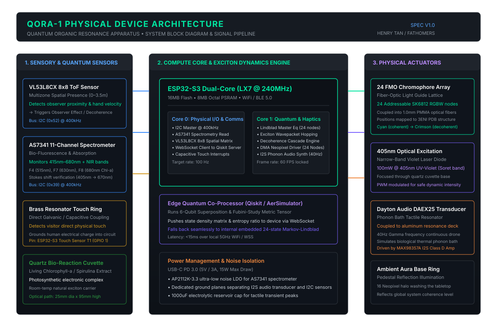
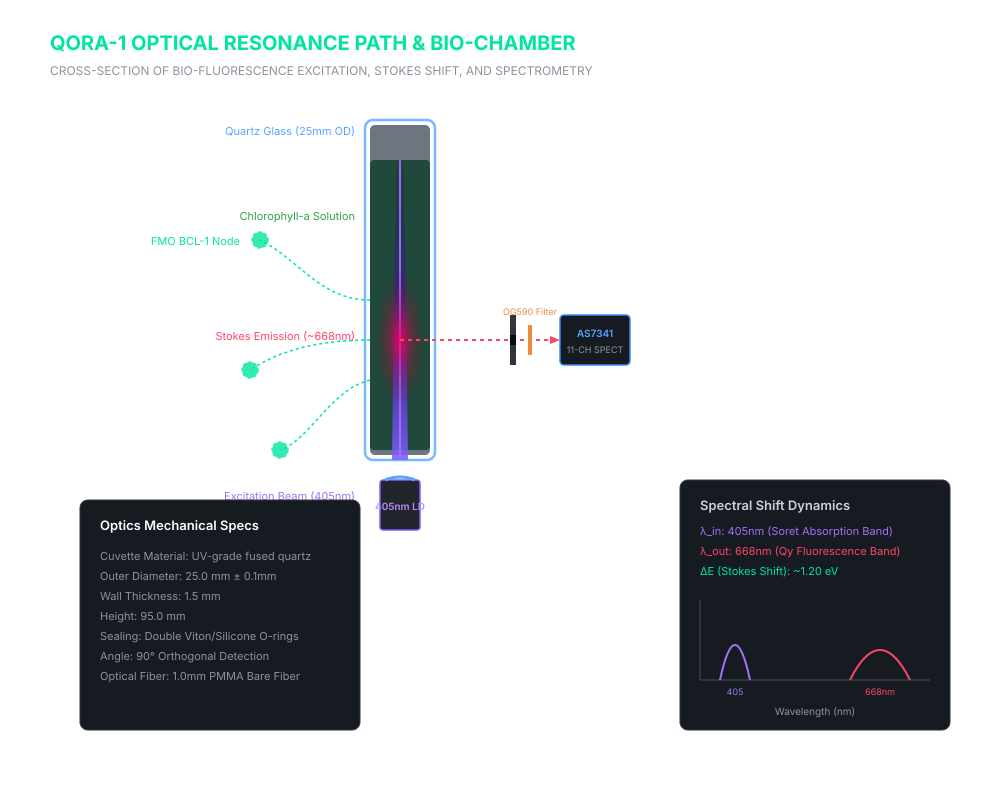
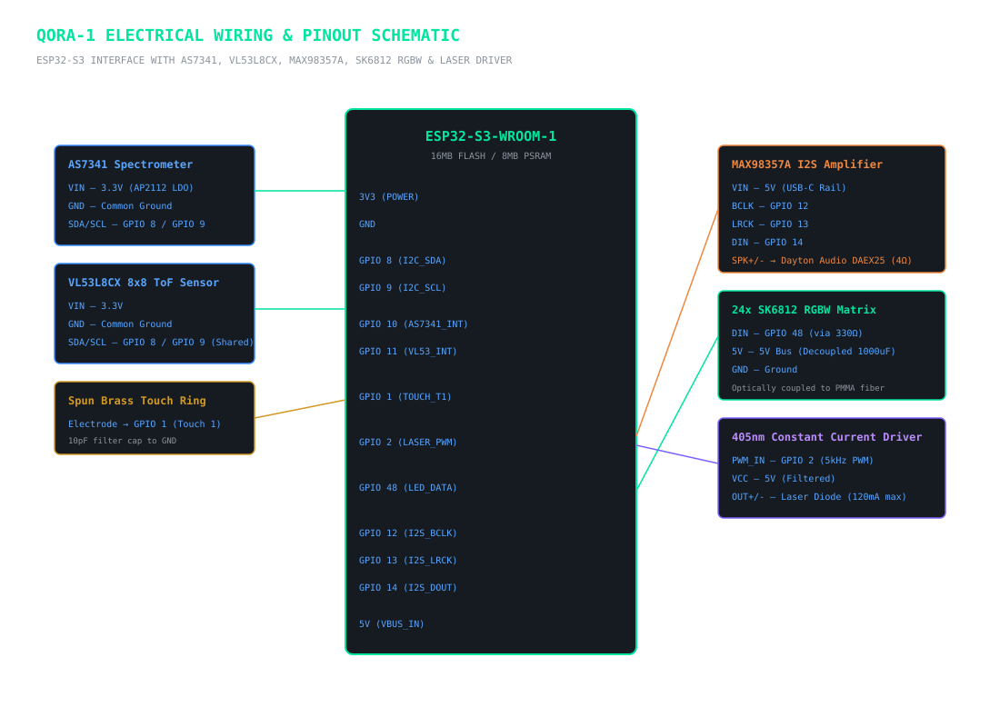
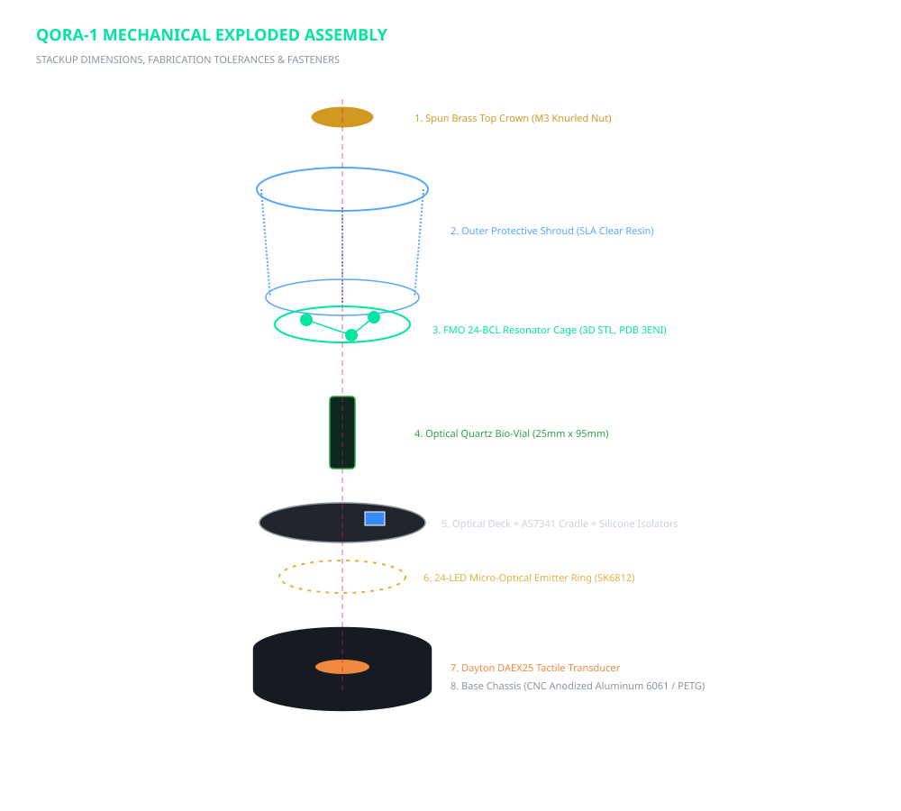

INSPECTION HUD
Real-time parameters derived from Fenna-Matthews-Olson biological coordinates (PDB 3ENI) and active sensor readings.
ACTIVE SELECTION
Complete Physical Assembly
200mm × 140mm pedestal installation device. Integrates living biological chlorophyll-a with solid-state multi-spectral feedback.
BIOLOGICAL SUBSTRATE
FMO C3 Trimer (24 Chromophores)
24 Bacteriochlorophyll-a nodes connected across 51 resonance conduits. Exciton transport simulated in real-time via 24-state Lindblad master equation.
OPTICAL PATHWAY
405nm UV → 668nm Stokes Luminescence
Narrow-linewidth 405nm laser excites Soret absorption band. 90° orthogonal spectrometry chamber filters excitation via OG590 barrier filter.
HAPTIC GAMMA FREQUENCY
40.0 Hz Phonon Bath
Dayton Audio bone-conduction exciter couples directly to the base chassis, transferring 40Hz acoustic vibrations into the listener's hands upon touching the brass ring.
ENGINEERING SCHEMATICS
Vector schematics covering electronic architecture, optical resonance, wiring pinouts, and exploded assembly stackup. Click any diagram to inspect full-scale.
1. SYSTEM ARCHITECTURE
Dual-Core ESP32-S3 Signal Pipeline

FreeRTOS Core 0: 60 FPS Lindblad exciton matrix • Core 1: I2S 40Hz DMA audio driver.
2. OPTICAL RESONANCE PATH
405nm UV Bio-Cell Fluorescence

90° spectrometry baffle isolates ruby fluorescence from the direct laser pump beam.
3. ELECTRICAL WIRING
Microcontroller & Sensor Pinouts

MAX98357A I2S DAC, AS7341 I2C, VL53L8CX ToF, and Touch T1 brass electrode.
4. MECHANICAL STACKUP
Assembly Dimensions & Tolerances

CNC base, Viton O-ring liquid isolation, and quick-release knurled crown nut.
BILL OF MATERIALS (BOM)
Verified components and direct sourcing channels for producing the QORA physical device.
| REF |
PART |
SPEC |
EST. |
| E01 |
ESP32-S3 DevKit |
Dual-Core 240MHz, 16MB Flash, 8MB PSRAM |
$6.50 |
| E02 |
AS7341 Breakout |
AMS 11-Channel Visible/NIR Spectrometer |
$15.95 |
| E03 |
VL53L8CX / VL53L1X |
8x8 Multi-Zone Time-of-Flight Presence |
$14.50 |
| E04 |
MAX98357A DAC |
3.2W I2S Class D Mono Audio Amplifier |
$5.95 |
| E05 |
Dayton DAEX25FHE-4 |
4Ω 24W Tactile Bone-Conduction Exciter |
$11.50 |
| E06 |
SK6812 Mini-3535 |
24x Addressable RGBW Micro Optical Emitters |
$7.00 |
| E07 |
405nm Laser Diode |
100mW Violet Focusable Laser Module |
$12.00 |
| O01 |
Quartz Bio-Cuvette |
Fused Quartz JGS1 (Ø25mm OD × 95mm H) |
$22.00 |
| O02 |
OG590 Cutoff Filter |
Schott 590nm Longpass Barrier (Ø15mm) |
$18.00 |
| O03 |
PMMA Light Guides |
24x Ø1.0mm End-Glow Optical Fibers |
$8.00 |
| M01 |
Base Chassis |
CNC 6061-T6 Black Anodized / PETG-CF |
$25.00 |
| M02 |
Spun Brass Touch Ring |
C36000 Solid Architectural Brass |
$18.00 |
ESTIMATED PRODUCTION BUDGET
$150 – $180 USD (DIY 3D Print) / $250 – $290 (Museum CNC)
FABRICATION & BIO-PREPARATION
Manufacturing instructions, 3D printing parameters, and living chlorophyll extraction protocol.
1. 3D PRINTING STL PACK
Download manufacturing-ready watertight STL files for SLA and FDM 3D printing:
2. LIVING CHLOROPHYLL-A EXTRACTION
Simple Protocol (High Fluorescence Yield):
- Macerate 20g fresh organic baby spinach or Spirulina powder in a mortar with 50mL of 80% food-grade ethanol or pure vegetable glycerin.
- Filter through a 0.2µm PTFE syringe filter to obtain a particle-free, optical-grade solution.
- Under standard light, the fluid is emerald green. When the 405nm violet beam passes through, it emits intense ruby-red fluorescence at 668nm.
- Pour into the quartz cuvette, seal with Viton O-rings, and tighten the knurled top crown nut.
ESP32-S3 CORE FIRMWARE
Multi-threaded FreeRTOS firmware running the 24-state Lindblad exciton dynamics at 60 FPS on Core 0 and the 40Hz I2S phonon audio synth on Core 1.
↓ DOWNLOAD FIRMWARE (.INO)
/*
* QORA-1 — Quantum Organic Resonance Apparatus
* Hardware Configuration:
* - ESP32-S3 (Dual-Core LX7 @ 240MHz)
* - AS7341 11-Channel Spectrometer (I2C 0x39)
* - VL53L8CX 8x8 ToF Presence Matrix
* - MAX98357A I2S DAC driving Dayton 40Hz Exciter
* - 24x SK6812 RGBW Optical Chromophore Nodes
*/
#include <Arduino.h>
#include <Wire.h>
#include <Adafruit_NeoPixel.h>
#include <driver/i2s.h>
// Pinned Tasks:
// Core 0: 60 FPS Quantum Lindblad Simulation
// Core 1: 44.1kHz DMA I2S 40Hz Phonon Synthesizer
void setup() {
init_i2s();
xTaskCreatePinnedToCore(task_audio_engine, "Audio", 4096, NULL, 2, NULL, 1);
xTaskCreatePinnedToCore(task_quantum_sim, "Quantum", 8192, NULL, 1, NULL, 0);
}